Новая профессия
Освойте основы ведения индивидуальных и командных коуч-сессий.
Уточнить условия →Освой новую профессию с International Coach Union: 8 модулей, 160+ академических часов обучения и 60 часов межмодульной практики в трёх ролях. Онлайн в Zoom на русском языке.
Практика в трёх ролях — чтобы понять процесс с разных сторон
Коучинговые инструменты пригодятся в разных профессиях. Начать обучение можно без предыдущей подготовки коуча.
Освойте основы ведения индивидуальных и командных коуч-сессий.
Уточнить условия →Развивайте слушание, постановку вопросов и навыки работы с командой.
Обсудить задачу →Дополните практику инструментами для постановки целей и развития.
Узнать подробнее →Преподаватели, практическая программа, оригинальные документы и отзывы выпускников. Ниже можно самостоятельно изучить источники.
Во время обучения и между модулями участники закрепляют инструменты в сессиях.
Описание программы, образцы документов, отзывы и рецензии доступны для просмотра.
Архив церемонии «Выбор года» и материалы коучинг-центра.
Видео награждения →Содержание перенесено из программы на действующем сайте. Нажмите на модуль, чтобы увидеть темы, упражнения и ожидаемый результат. Полная программа доступна в PDF.
Изучаем: Принципы и этика коучинга, модель GROW, постановка целей, виды вопросов и обратная связь.
Практикуем: Разбираем структуру индивидуальной беседы, формулирование целей и применение коучинговых вопросов.
Результат: Понимание последовательности коуч-сессии и базовых инструментов работы с запросом клиента.
13–14 марта 2027
Изучаем: Классический и стратегический коучинг, «Колесо жизни», подходы к работе с привычками.
Практикуем: Разбираем индивидуальные коуч-сессии и получаем обратную связь в формате супервизии.
Результат: Умение анализировать индивидуальную сессию и выбирать подходящий инструмент для учебного запроса.
Даты уточняются
Изучаем: Групповую динамику, контакт с аудиторией, фасилитацию, модерацию и методы коучинг-тренинга.
Практикуем: Отрабатываем структуру коучинг-тренинга, представление материала и приёмы взаимодействия с группой.
Результат: Навыки подготовки коучинг-тренинга и организации обсуждения в команде.
Даты уточняются
Изучаем: Системный коучинг, модели SOAR, Коттера и Сенге, способы работы с групповыми конфликтами.
Практикуем: Разбираем командные сессии, системные ситуации и способы фасилитации в формате супервизии.
Результат: Умение анализировать командную динамику и подбирать инструменты для групповых задач.
Даты уточняются
Изучаем: Линию времени, LAB-profile, работу с частями личности и сущностную трансформацию.
Практикуем: Знакомимся с последовательностью применения трансформационных моделей на учебных примерах.
Результат: Понимание возможностей и границ основных инструментов трансформационного коучинга.
Даты уточняются
Изучаем: Коучинг ценностей и убеждений, спиральную динамику и ресурсные метафоры.
Практикуем: Разбираем учебные запросы, связанные с ценностями, убеждениями и поиском ресурсов.
Результат: Навыки исследования ценностей и убеждений в рамках коучингового диалога.
Даты уточняются
Изучаем: Директивные и недирективные метафоры, символ-драму, сторителлинг и метафоры идентичности.
Практикуем: Разбираем применение метафор в коуч-сессиях и получаем обратную связь в супервизии.
Результат: Понимание того, как выбирать метафорические инструменты и обсуждать их использование с клиентом.
Даты уточняются
Изучаем: Продвижение услуг коуча, профессиональное планирование, стресс-менеджмент и интеграцию навыков.
Практикуем: Систематизируем изученные подходы и готовимся к предусмотренной программой итоговой оценке.
Результат: План дальнейшей коучинговой практики и готовность представить освоенные навыки на сертификации.
Даты уточняются
Важная часть программы — обучение через личный опыт и взаимную обратную связь.
Исследуете запрос и наблюдаете коучинговый процесс изнутри.
Тренируете вопросы, слушание и структуру сессии.
Учитесь наблюдать процесс и давать конструктивную обратную связь.
Условия зачёта практики и требования к сертификации определяются утверждённой учебной программой.
Четыре преподавателя, представленные на действующем сайте ICU. Участие каждого в потоке 2027 года необходимо подтвердить у координатора.
Мастер Тренер ICU
Бизнес-тренер, аккредитованный Мастер Тренер ICU. Член консультативного Совета в сфере HR-менеджмента Университета Франклина (США). Преподаватель программы МВА. Учредитель группы компаний «Коучинг Центр ICU» и 5 юридических лиц. Реализовал более тысячи тренинговых и коучинговых проектов в Литве, Латвии, Эстонии, Польше, Грузии, Беларуси, Украине, России.
Образование: врач психиатр, психотерапевт; психолог со специализацией предпринимательская деятельность и менеджмент. Дополнительное образование: гештальт-терапевт, когнитивно-бихевиоральный терапевт, «Символ-Драма», программы по стресс-менеджменту, тайм-менеджменту и психологии кризисных ситуаций.
PhD, Мастер Коуч ICTA
Сертифицированный Профессиональный Мастер Коуч ICTA, Профессиональный Мастер-Тренер ICTA, Аккредитованный тренер ICU, профессиональный психолог, преподаватель психологии и философии. Получил образование и защитился в Люблянском университете (Словения). Преподает в университетах Москвы и Варшавы.
Образование: доктор теологии (UO), педагог (KUL), психолог. Специализации: трансформационный и экзистенциальный коучинг.
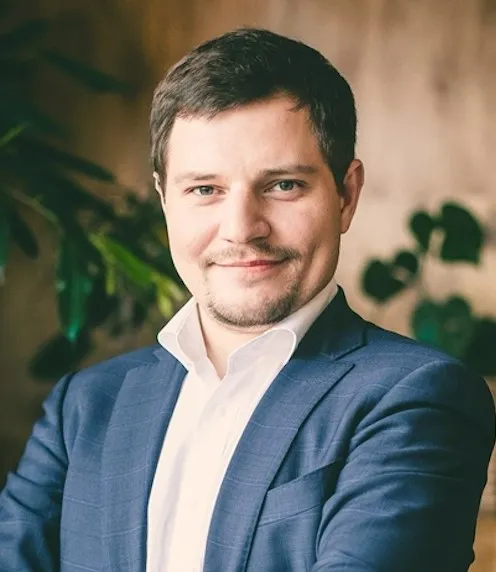
Кандидат психологических наук
Certified Professional Master Trainer ICU. Certified Professional Master and Trainer of Coaching and Executive Coach (опыт работы с 2009 г). Certified Business Trainer международного класса (опыт тренерской работы с 2004 года). Провел более 1000 тренингов и семинаров в странах СНГ и ЕС.
Старший преподаватель департамента психологии НИУ ВШЭ и МФТИ. Профессиональный психолог-консультант. Проводит индивидуальный и командный коучинг для руководителей крупных международных компаний. Включен в Международную энциклопедию «WHO IS WHO». Ведущий блока «командный коучинг».

Мастер Коуч ICU
Сертифицированный ICU Professional Master Coach, тренер ICU. Оказывала услуги коучинга спортсменам олимпийской сборной. Использует коучинг в процессе подготовки спортсменов-футболистов и других видов спорта. Координатор программ центров Коучинга ICU.
Образование: высшее, факультет психологии. Повышение квалификации: Институт Консультирования и Системных Решений на базе Высшей школы психологии. Специалист в области стратегического планирования, управления человеческими ресурсами, системного подхода в консультировании.
Примеры документов с действующего сайта ICU. Нажмите на изображение для просмотра полного размера. Условия выдачи конкретного документа уточняйте до оплаты.

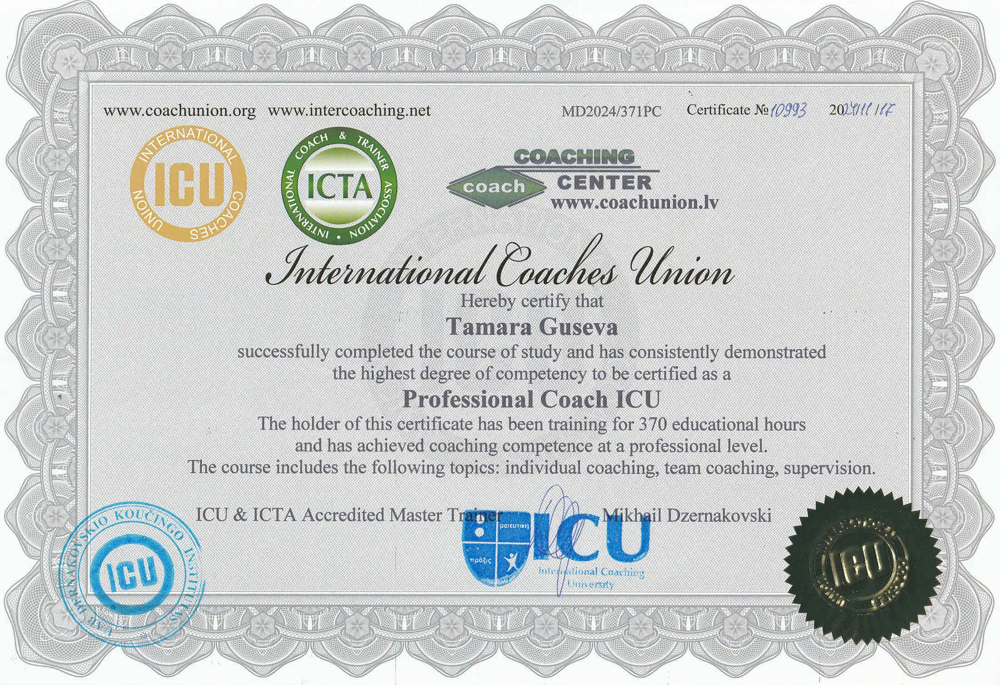
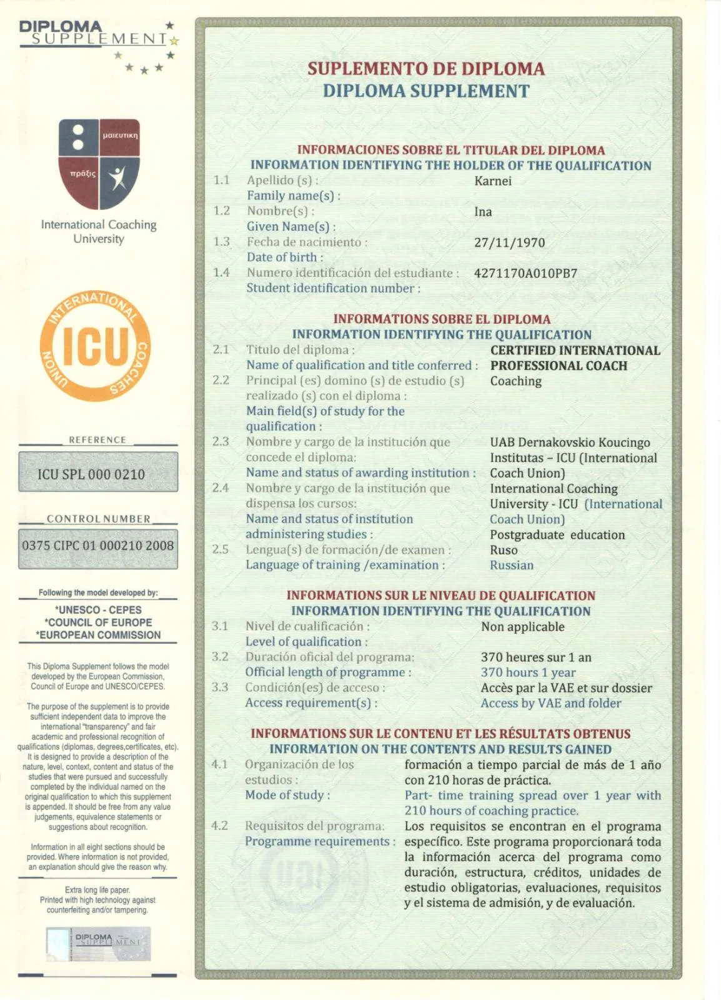
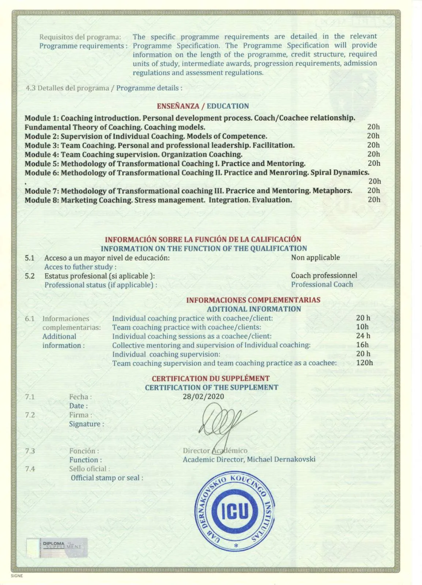
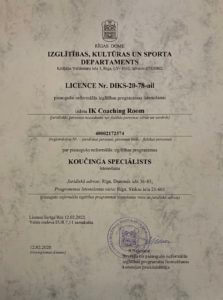
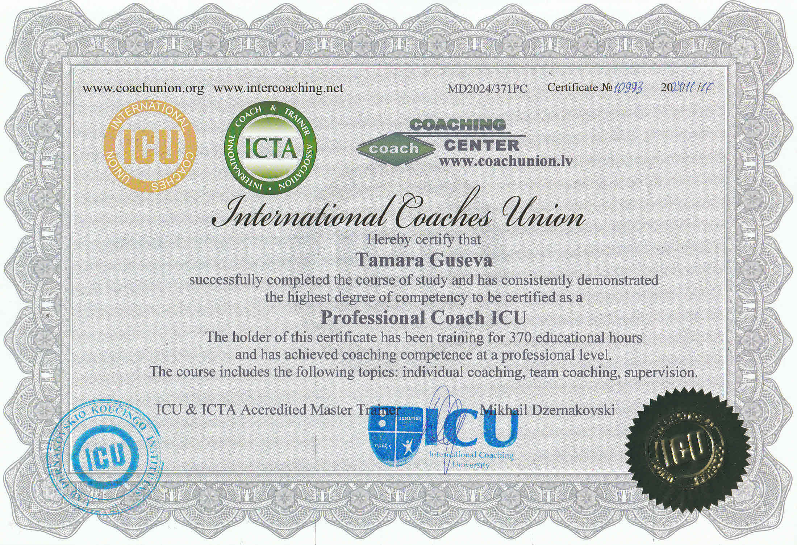
ICU — не то же самое, что ICF. Исторический период оценки программы TESU закончился 30 июня 2025 года. Университетские кредиты для потока 2027 года не гарантируются.
Учебная программа ICU (PDF) · Дополнительное описание программы (PDF)
Видеоотзывы участников курса и оригинальные сканы организаций, академических рецензий и публикаций — это разные типы материалов, поэтому показываем их отдельно.

Посмотреть на YouTube

Посмотреть на YouTube

Посмотреть на YouTube

Посмотреть на YouTube
Включает письма организаций, рецензии и публикации в СМИ. Один автор может быть представлен несколькими документами.
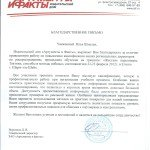
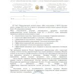
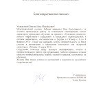
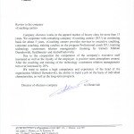
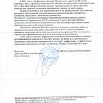
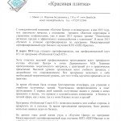
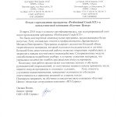
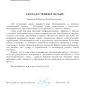
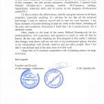
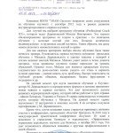
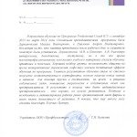
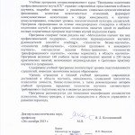
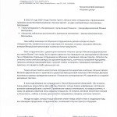
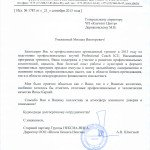
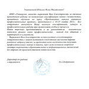
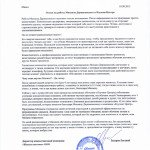
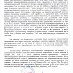
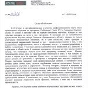
Первый модуль запланирован на 13–14 марта 2027. Полный календарь последующих модулей уточняется у координатора.
Занятия проходят по выходным онлайн в Zoom, язык обучения — русский.
Вы можете оплачивать обучение по модулям или воспользоваться скидкой при полной предоплате.
1 440 € · скидка 15% (экономия 216 €)
Или 8 платежей по 180 € за модуль.
Узнать условия записиДа, программу можно начать с основ коучинга.
В Zoom, на русском языке, с практикой между модулями.
Первый модуль — 13–14 марта 2027 года. Остальные даты уточняются.
Условия выдачи документа ICU определяются требованиями программы; образцы приведены выше.
По 180 € за модуль либо полная предоплата со скидкой 15%, если условия действуют на момент записи.
Мы расскажем о программе, стоимости и требованиях. Сообщение будет подготовлено в WhatsApp — отправить его сможете только вы.
+371 260 37277
coachunion.riga@gmail.com